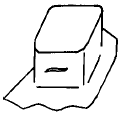
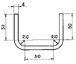
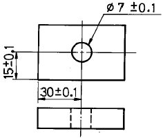
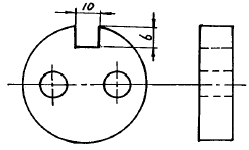
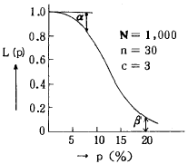
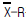

금형제작기능장 (2003-03-30 기출문제)
1과목: 임의 구분
1. 절대압력과 게이지압력과의 관계를 나타낸 것 중 옳은 것은 ?
- 절대압력 = 대기압력+게이지압력
- 절대압력 = 대기압력X게이지압력
- 절대압력 = 대기압력-게이지압력
- 절대압력 = (대기압력X게이지압력)/2
(정답률: 알수없음)

2. 공유압 회로에서 유체의 흐름을 일정방향으로 흐르게 하고 역방향의 흐름을 통과시키지 않는 밸브는 ?
- 슬라이드밸브(Slide valve)
- 솔레노이드밸브(Solenoid valve)
- 2압밸브(Two pressure valve)
- 체크밸브(Check valve)
(정답률: 알수없음)
3. 다음 중 오일의 점성을 이용한 기계는 ?
- 쇼크 업소버
- 토크 컨버터
- 유압 프레스
- 진동 개폐밸브
(정답률: 알수없음)
4. 공기압의 부속기기 중 벤튜리(Venturi)원리를 이용한 것을 무엇이라고 하는가 ?
- 필터(filter)
- 윤활기
- 제습기
- 소음기
(정답률: 알수없음)
5. 축압기 회로의 용도로 볼 수 없는 것은 ?
- 안전장치회로
- 압력유지회로
- 보조동력원회로
- 사이클시간연장회로
(정답률: 60%)
6. 질화용 표면 경화강은 Al, Cr, Mo, Ti, V등의 원소중 2개 이상의 성분을 함유한 것이 사용되고 있다. 그런데, 이들 원소중 Al을 2% 정도 첨가 하였을때 가장 많이 증가하는 것은?
- 경도
- 내식성
- 인성
- 절삭성
(정답률: 알수없음)
7. 강철은 A1변태점을 경계로 다음 중 어느 변태가 일어나는가?
- 오스테나이트 ↔ 페라이트
- 오스테나이트 ↔ 펄라이트
- 오스테나이트 ↔ 마텐사이트
- 오스테나이트 ↔ 시멘타이트
(정답률: 알수없음)
8. 베이나이트(bainite)를 설명한 것으로 가장 옳은 것은?
- 강의 A1변태를 급냉에 의하여 저지하였을 때 나타난다.
- 강을 수중담금질 할 때에 나타난다.
- 마아텐자이트와 트루스타이트의 중간상태 조직이다.
- T.T.T곡선의 코(nose)보다 낮은 온도에서 등온변태할 때 생성 된다.
(정답률: 알수없음)
9. 처음 주어진 특정한 모양의 것을 인장하거나 소성변형 한것이 가열에 의하여 원래의 형상으로 돌아가는 현상을 가진 금속재료는?
- 초소성 재료
- 형상기억합금
- 초전도 재료
- 비정질 재료
(정답률: 알수없음)
10. 용해시에 흡수한 산소를 인(P)으로 탈산하여 산소(O)의 양을 0.01% 이하로 저하시킨 동은?
- 정련동
- 전기동
- 탈산동
- 무산소동
(정답률: 알수없음)
11. 다음중 스프링강으로 쓰이는 가장 적당한 재료는?
- Cr - Mo강
- Al - Cr강
- Si - Mn강
- Mn - S강
(정답률: 알수없음)
12. 주철의 조직에 가장 큰 영향을 주는 성분으로 가장 알맞은 것은?
- Si, C
- Si, Mn
- Si, S
- Si, P
(정답률: 알수없음)
13. 금형의 파팅라인에서 어긋남 발생의 원인과 거리가 가장 먼 항목은?
- 연속운전에 의한 맞춤기구의 마모
- 금형자체 중량에 의한 휨
- 열팽창에 의한 영향
- 러너 길이가 너무 길 때
(정답률: 알수없음)
14. 사출금형에서 사출할때 노즐 또는 게이트 등 작은 통로를 통과하고나면 실린더 내부의 온도가 처음 온도보다 높게된다. 그 원인으로 가장 옳은 것은 ?
- 사출의 압력에너지가 열에너지로 전환하기 때문
- 사출의 속도에너지가 열에너지로 전환하기 때문
- 사출의 저항에너지가 열에너지로 전환하기 때문
- 사출의 응력에너지가 열에너지로 전환하기 때문
(정답률: 알수없음)
15. 탭 게이트(tab gate)는 어느 수지에 가장 많이 적용 되는가 ?
- POM
- ABS
- PA
- PVC
(정답률: 알수없음)
16. 다수개 빼기 금형에서 런너의 길이를 20mm, 게이트의 랜드를 2mm, 런너 직경을 8.0mm로 주어졌을 때 게이트 밸런스 값은 약 얼마인가 ? (단, 게이트와 런너의 단면적 비 SG/SR=0.09로 한다)
- 0.4
- 0.5
- 0.6
- 0.7
(정답률: 알수없음)
17. 슬라이드 코어의 위치를 결정하여 주는 금형 부품은?
- 가이드 핀(guide pin)
- 스톱 핀(stop pin)
- 로킹 블록(locking block)
- 리턴 핀(return pin)
(정답률: 알수없음)
18. 다음중 열가소성 수지중 비결정성 수지에 해당되지 않는 것은?
- 폴리아세탈
- ABS
- 메타크릴
- 폴리카보네이트
(정답률: 알수없음)
19. 성형품의 형상 정밀도가 가장 좋은 사출금형의 제작법은 다음 중 어느 것인가 ?
- 방전 가공법
- 전주에 의한 방법
- 벨리륨동 주조에 의한 방법
- 콜드 호빙에 의한 방법
(정답률: 알수없음)
20. 일반금속 재료는 정수압(靜水壓) 상태하에서는 연성이 높아 진다. 이 원리를 이용한 가공법은 어느 것인가 ?
- 다이캐스팅(Die casting)
- 정밀블랭킹(Fine blanking)
- 로울 포오밍(Roll forming)
- 노칭(Notching)
(정답률: 알수없음)
2과목: 임의 구분
21. 스웨징(swaging)가공에서 1회 이송으로 변형하는 면적 변형율 η를 구하는 식은 ? (단, d1은 가공전의 직경, d2는 가공후의 직경이다.)
- η=[1-d2/d1]x100(%)
- η=[1-d1/d2]x100(%)
- η=[1-(d1/d2)2]x100(%)
- η=[1-(d2/d1)2]x100(%)
(정답률: 알수없음)
22. 분말 성형금형에 의한 성형방법으로 틀린 것은?
- 측면압축 방법
- 일방압축 방법
- 양면압축 방법
- 하향압축 방법
(정답률: 알수없음)
23. 다음 전단가공(blanking)에서 가장 치수정밀도가 정확하고 기계절삭 다듬질면과 같은 직각단면을 얻을 수 있는 가공방법은 ?
- 노칭(notching)
- 란싱(lancing)
- 세이빙(shaving)
- 피어싱(piercing)
(정답률: 알수없음)
24. 드로잉금형을 제작하여 시험작업을 하여보니 그림과 같이 측벽이 터질려 하는 것 외에는 별다른 이상이 없었다. 이것을 터지지 않게 하는 대책으로서 가장 바르지 못 한 것은?

- 소재면에 윤활유를 바른다.
- 다이모서리의 반지름을 약간 키운다.
- 주름억제 압력을 약간 크게 한다.
- 다이의 모서리 반지름을 래핑한다.
(정답률: 알수없음)
25. 다음 그림과 같은 제품을 U굽힘으로 완성가공 하려고 한다. 소재의 길이는 얼마 이어야 하는가? (단, 중립면 이동계수 k의 값은 0.5를 택한다.)

- 187.7mm
- 225.4mm
- 212.8mm
- 193.9mm
(정답률: 알수없음)
26. 블랭킹 다이에서 제품의 치수를 정하는 방법을 설명하였다. 다음 중 가장 적당하다고 생각되는 것은 ?
- 블랭킹 펀치를 정치수로 하여 다이의 치수를 가감 하여 클리어런스를 준다.
- 구멍치수가 필요한 피어싱 할 때는 다이를 정치수로 하여 펀치의 치수를 가감하여 클리어런스를 준다.
- 블랭킹이나 피어싱은 다같이 다이를 정치수로 하여 펀치의 치수를 적게 한다.
- 블랭킹 때는 다이의 치수 피어싱 때는 펀치를 각각 정치수로 한다.
(정답률: 알수없음)
27. 프레스 금형에 있어서 파일럿 핀 설명 중 틀린 것은 ?
- 피어싱 전 공정에 위치해 있다.
- 피어싱 펀치보다 재료두께를 고려하여 적게 한다.
- 다른 공정의 펀치보다 길다.
- 파이롯 핀은 2개 이상이 좋다.
(정답률: 알수없음)
28. 드웰(G04)은 지령된 점에서 일정시간 멈추기 위하여 사용하는데, 사용할 수 없는 어드레스는?
- X
- S
- U
- P
(정답률: 알수없음)
29. NC의 프로그램 구성에서 보조기능 코드의 M06의 기능은?
- 주축정지
- 공작물 교환
- 공구교환
- 정방향 회전
(정답률: 알수없음)
30. 다음 레이저(LASER)가공의 특징 설명중 틀린 것은?
- 비접촉 가공으로 공구마모가 없다.
- 자동가공이 가능하다.
- 높은 에너지를 집중시킴으로써 열에 의한 변형이 많다.
- 금속 및 비금속 어느 재료라도 가공이 가능하다.
(정답률: 알수없음)
31. 다음 중에서 방전가공의 특징을 설명한 것으로 잘못된 것은?
- 고경도, 고강도의 재료를 비교적 쉽게 가공할 수 있다.
- 내부식성이 높은 가공면을 얻을 수 있다.
- 복잡한 형상의 구멍을 비교적 쉽고, 정확히 가공할 수 있다.
- 전기 전도도에 관계없이 모든재료를 가공할 수 있다.
(정답률: 알수없음)
32. 금형제작에 사용되는 모델의 재료로서 갖추어야 할 조건 중 틀린 것은?
- 가공이 용이하며, 작업이 간단할 것
- 내마모성과 내열성이 클 것
- 정확한 복제가 될 수 있을 것
- 팽창, 수축 등의 변화가 적을 것
(정답률: 알수없음)
33. 다이 캐스팅에는 콜드 챔버(cold chamber)용 금형과 핫챔버(hot chamber)용 금형이 있다. 다음 중 콜드 챔버용 금형에 사용되는 금속은?
- 아연
- 납
- 주석
- 알루미늄
(정답률: 알수없음)
34. 다이스 또는 롤러로 소재에 압력을 주어 나사와 같은 제품을 만드는 방법은?
- 엠보싱
- 전조
- 스웨이징
- 압인
(정답률: 알수없음)
35. 공작물의 치수관리 요령으로서 가장 부적합한 것은 ?
- 공차누적방지
- 공작물의 변위량에 따른 치수공차 초과방지
- 공작물의 휨방지
- 공작물의 불균일한 형상이 치수공차 초과방지
(정답률: 알수없음)
36. 지그 및 고정구의 사용목적으로 틀린 것은 ?
- 가공물의 가공시간을 단축시켜 저렴한 가격으로 제품을 얻을 수 있다.
- 미숙련자에 의한 작업이 가능하다.
- 가공중 제품의 변형을 최대한 방지할 수 있다.
- 상대적으로 일정요구를 만족시키므로 호환성이 결여되는 제품을 얻는다.
(정답률: 알수없음)
37. 그림과 같은 공작물에 구멍을 가공하고자 한다. 위치결정구로 부터 부시 중심선 까지의 위치공차는 얼마로 하는 것이 가장 적당한가?

- ± 0.0⑤
- ± 0.01
- ± 0.02
- ± 0.⑤
(정답률: 알수없음)
38. 다음 중 고정 부시와 지그 몸체와의 끼워맞춤으로 가장 적당한 것은 ?
- H7p6
- H7h6
- H7g6
- H7js6
(정답률: 알수없음)
39. 다음 그림은 10(mm)x6(mm)의 홈을 밀링으로 가공하려고 한다. 다음 중 가장 적합한 고정구는 어느 것인가 ?

- 박스고정구
- 플레이트 고정구
- 바이스죠 고정구
- 분할고정구
(정답률: 알수없음)
40. 다이얼 게이지를 이용한 진원도 측정법이 아닌 것은 ?
- 직경법
- 3점법
- 반경법
- 삼선법
(정답률: 알수없음)
3과목: 임의 구분
41. 기준 피치원 직경 250mm, 모듈 4인 기어를 대량 생산하고 있다. 이를 현장 공정에서 종합오차를 검사하기 위한 가장 적합한 측정방법은 어느 것인가 ?
- 투영기에 의한 차트 일치법
- 기초 원판식 치형 시험기
- 이두께 마이크로미터에 의한 측정법
- 기어 맞물림 시험기에 의한 검사
(정답률: 알수없음)
42. 정반(750mm × 1000mm)의 평면도를 ± 1μm의 정밀도로 측정하고져 할 때 다음 중 가장 이상적인 측정 방법은 ?
- 다이얼 인디케이터를 사용하여 측정
- 오토콜리메이터에 의한 측정
- 광선정반(optical flat)에 의한 측정
- 강선(鋼線)과 측정현미경에 의한 측정
(정답률: 알수없음)
43. 사인바로 각도를 측정할 때 몇 도를 넘으면 오차가 심하게 되는가 ?
- 15°
- 25°
- 30°
- 45°
(정답률: 알수없음)
44. 최대 측정길이 175mm의 마이크로 미터를 사용할 때 기준봉의 허용치수는 ± 3μm이고 마이크로 미터의 종합 오차는 ± 4μm 이다. 기준봉을 사용하여 영점을 조정할 때 일어날 수 있는 최대 오차는 ?
- ± 7μm
- ± 12μm
- ± 11μm
- ± 5μm
(정답률: 알수없음)
45. CNC 와이어 컷 방전가공에서의 세컨드 컷(Second cut)의 목적과 효과가 아닌 것은?
- 다이 형상에서의 돌기부분 제거
- 가공면에서의 연화층의 성장
- 가공물의 내부응력 개방후 형상수정
- 가공면의 진직정도의 수정
(정답률: 알수없음)
46. 중앙처리장치(CPU)에서 프로그램이 있는 명령어에 따라 기계가 작동하도록 하는 역활을 수행하는 부분은?
- 기억장치(Memory unit)
- 연산논리장치(ALU)
- 제어장치(Control unit)
- 주기억장치(Main memory unit)
(정답률: 알수없음)
47. 10진수 21을 2진수로 변환할 때 맞는 것은 ?
- 10101
- 11101
- 11111
- 01111
(정답률: 알수없음)
48. 방전가공 전극용 재료 중 기계가공이 용이하고 강성이 좋아 정밀도를 필요로 하는 전극에 널리 사용되고 있으나, 가격이 고가이고 주조나 단조를 할 수 없는 전극용 재료는?
- 동-텅스텐
- 그래파이트
- 전기동
- 동-텔루르-크롬 합금
(정답률: 알수없음)
49. 머시닝센터에 사용되는 준비기능 중 G42 코드의 기능은?
- 자동 공구길이 측정
- 공구길이 보정 "+"
- 공구지름 보정 취소
- 공구지름 보정 우측
(정답률: 알수없음)
50. 1차 제어시스템의 단위계단 응답과 단위 임펄스 응답에서 각각 응답의 최종값은?
- 모두 같다.
- 단위계단 응답은 1이고, 단위임펄스 응답은 0이다.
- 단위계단 응답은 0이고, 단위임펄스 응답은 1이다.
- 각각의 응답은 불안정하므로 최종값은 알 수 없다.
(정답률: 알수없음)
51. 다음의 센서들은 물체의 유무를 감지하는 센서들이다. 이들 중에서 감지방법이 접촉식인 것은 ?
- 리밋스위치
- 광전스위치
- 전파(Sonar)스위치
- 자기식 근접스위치
(정답률: 알수없음)
52. 종래의 릴레이 및 타이머를 이용한 시퀀스회로에 비하여 최근에는 PLC를 활용하는 경우가 많다. 다음 중 PLC의 장점으로 적합하지 않는 것은?
- 배선이 간결하여 유지보수가 비교적 용이하다
- 내부회로의 수정이 용이하여 증설, 개선에 편리하다
- 동일 접점이 제한없이 사용되어 회로구성이 편리하다
- CPU가 Down 되어도 공정에 영향이 없다
(정답률: 알수없음)
53. 다음 중에서 제어용 서보모터의 특징과 가장 거리가 먼 것은?
- 모터 자체의 관성모멘트가 크다.
- 넓은 속도제어 범위를 갖는다.
- 소형, 경량이다.
- 큰 가감속 토크를 얻을 수 있다.
(정답률: 알수없음)
54. 유압회로에서 체크밸브의 진동수가 스프링의 고유진동수와 공진함으로 인해서 발생하는 소음의 원인인 것은 ?
- 과대 유량에 의한 유체 반력이 크다
- 인 라인형으로 크래킹압이 높다
- 작동유 점도가 크다
- 유온(기름온도)이 낮다
(정답률: 알수없음)
55. 그림의 OC곡선을 보고 가장 올바른 내용을 나타낸 것은?

- α : 소비자 위험
- L(p) : 로트의 합격확률
- β : 생산자 위험
- 불량율 : 0.03
(정답률: 60%)
56. 품질관리 활동의 초기단계에서 가장 큰 비율로 들어가는 코스트는?
- 평가코스트
- 실패코스트
- 예방코스트
- 검사코스트
(정답률: 알수없음)
57. PERT/CPM에서 Network 작도시 碇은 무엇을 나타내는가?
- 단계(event)
- 명목상의 활동(dummy activity)
- 병행활동(paralleled activity)
- 최초단계(initial event)
(정답률: 알수없음)
58. 신제품에 가장 적합한 수요예측 방법은?
- 시계열분석
- 의견분석
- 최소자승법
- 지수평활법
(정답률: 알수없음)
59. 관리도에 대한 설명 내용으로 가장 관계가 먼 것은?
- 관리도는 공정의 관리만이 아니라 공정의 해석에도 이용된다.
- 관리도는 과거의 데이터의 해석에도 이용된다.
- 관리도는 표준화가 불가능한 공정에는 사용할 수 없다.
- 계량치인 경우에는

관리도가 일반적으로 이용된다.
(정답률: 알수없음)
60. 다음은 워크 샘플링에 대한 설명이다. 틀린 것은?
- 관측대상의 작업을 모집단으로 하고 임의의 시점에서 작업내용을 샘플로 한다.
- 업무나 활동의 비율을 알 수 있다.
- 기초이론은 확률이다.
- 한 사람의 관측자가 1인 또는 1대의 기계만을 측정한다.
(정답률: 알수없음)
게이지압력은 대기압력을 기준으로 측정된 압력을 의미합니다. 즉, 게이지압력은 대기압력을 기준으로 상대적인 압력을 나타내는 것입니다. 따라서 게이지압력에 대기압력을 더하면 절대압력이 됩니다.
예를 들어, 대기압력이 1 bar이고 게이지압력이 2 bar인 경우, 절대압력은 3 bar이 됩니다. 이는 대기압력을 기준으로 상대적으로 2배 높은 압력을 나타내는 것입니다.